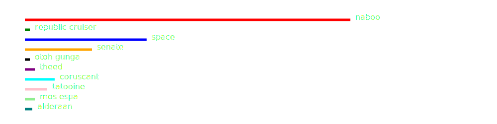
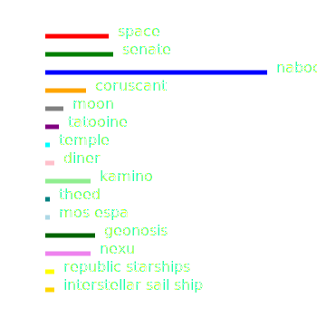
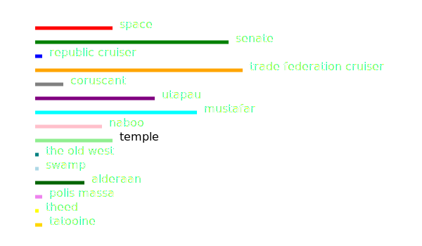
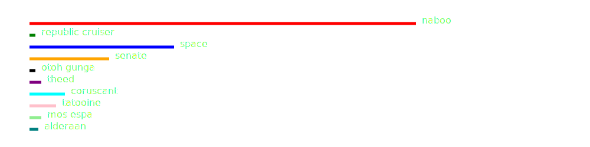
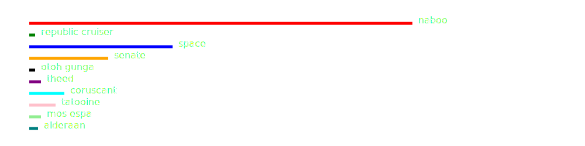
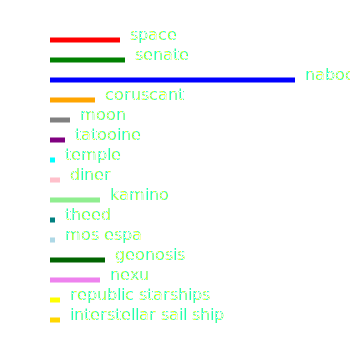
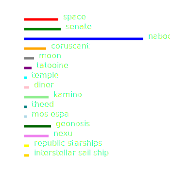
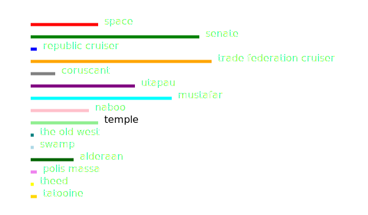
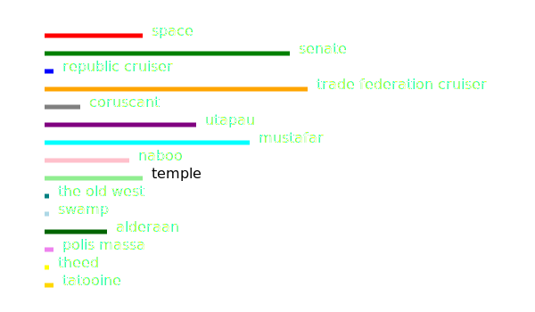

"Obi-Wan Kenobi is a young apprentice Jedi knight under the tutelage of Qui-Gon Jinn; Anakin Skywalker, who will later father Luke Skywalker and become known as Darth Vader, is just a 9-year-old boy. When the Trade Federation cuts off all routes to the planet Naboo, Qui-Gon and Obi-Wan are assigned to settle the matter."
For the Prequels, we analyzed the frequency of locations as there are a great many of them in these movies compared to
the original trilogy. As expected, Naboo is a major setting!

EPISODE II
"Set ten years after the events of "The Phantom Menace," the Republic continues to be mired in strife and chaos. A separatist movement encompassing hundreds of planets and powerful corporate alliances poses new threats to the galaxy that even the Jedi cannot stem. These moves, long planned by an as yet unrevealed and powerful force, lead to the beginning of the Clone Wars -- and the beginning of the end of the Republic."
In this episode, Naboo continues to be the number one location, but new locations are also introduced such as Geonosis and Kamino.

EPISODE III
"It has been three years since the Clone Wars began. Jedi Master Obi-Wan Kenobi and Jedi Knight Anakin Skywalker rescue Chancellor Palpatine from General Grievous, the commander of the droid armies, but Grievous escapes. Suspicions are raised within the Jedi Council concerning Chancellor Palpatine, with whom Anakin has formed a bond. Asked to spy on the chancellor, and full of bitterness toward the Jedi Council, Anakin embraces the Dark Side."
The epic conclusion to this trilogy has a much smaller amount of Naboo scenes and a surprisingly large amount of scenes on Trade Federation property.

Overall
An interesting graph we made compares all three movie locations compiled into one graph. Here we can see a summation of all locations.
 

 

 
